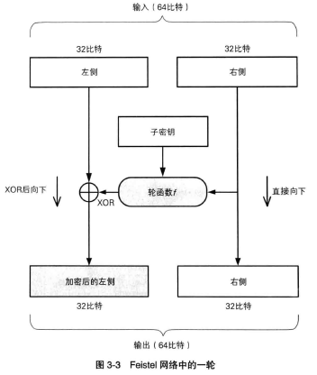
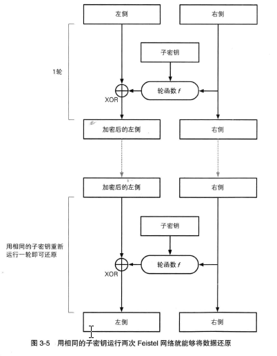

Short history of cryptograghy
1 Classical cryptography
1.1 Caesar Shift
1.1.1 Short introduction
It is said that this code was created by Caesar to protect the information during battle. The expression of Caesar shift is: C = (P + K) mod 26, the K represents the shift length which is 3 usually.
Message: I am a hero Key: 3 Encryption: I am a hero -> (I am a hero) + 3 mod 26 -> (I+3 a+3 m+3 ...) mod 26 -> L dp d khur If we replace all uppercase to lower and remove the space, the cipher will be ldpdkhur. Decryption: (ldpdkhur) - 3 mod 26 = iamahero
As you see, it is very simple. Relatively, it can be cracked easily if the cipher has been stolen. Even though, we have no idea about what K is, we can try it from 0 to 25 for at most 25 times to get the message.
1.1.2 Key space
Easy to find the space is 26, from 0 - 25.
1.2 Monoalphabetic substitution
1.2.1 Short introduction
Message: I am a hero Key table: A B C D E F G H I J K L M N O P Q R S T U V W X Y Z Q W E R T Y U I O P A S D F G H J K L Z X C V B N M Encryption: I->O, A->Q, M->D ... => oqmqitkg Decryption: reverse the map and search
Even though, it is easy to understand, it is hard to decrypted without key. If you have only a short cipher without any hint, it can't be decrypted. However, if you have a lot of ciphers with the same key, you can indicated the key table.
For the same key, the same char in the cipher represents the same char in the plain text. If we can indicated some characters correctly, more and more characters can be deduced. So the key point is the first several characters. Based on it, frequency of occurrence of char is a very powerful method to crack this code. For exammple, in English, e has the highest frequency of occurrence. If you have lots of ciphers, we can indicated which character is most likely being 'e'. The we can infer the phrase with he, the and so on.
1.2.2 Key space
26 * 25 * 24 * … * 1 is the number of all the key table, nearly 4*1026. If you can calculate 1010 keys per second, it will take about 12 billion years to finished it.
1.3 Enigma
If you have watched "The Imitation Game" which is a movie to introduce Turing, you must hear of Enigma. It is a machine to encrypt the message by Germany. If you are interested in it, you can google it. It is very hard to crack because for each character you have different key table, and the initial key table changed every day. So, in the World War II, only 24 hours can be used to decrypted the message. Based on the analysis of above topic, we can conclude it is impossible for human being without any hints. For the encryption and decryption, google it for more details.
2 Modern cryptography
For the current information, almost all of them are constructed by '0' and '1'. Thence, all the topics below based on '01'.
2.1 Mathematical operations
There are three basic principles of binary's operations: and( * ), or( + ), not( ! ).
And: 1 * 1 = 1, 1 * 0 = 0, 0 * 0 = 0, 0 * 1 = 0;
Not: !1 = 0, !0 = 1;
Or: 1 + 1 = 1, 1 + 0 = 1, 0 + 0 = 0, 0 + 1 = 1;
For the other operations of binary, they can be separated to a serials of combination of the and, or, not. For cryptography, there is a significant operations of binary, XOR - which can be marked as \u2295.
A \bigoplus B = A(!B) + (!A)B
If you calculate A \bigoplus B \bigoplus B, you can find that the result is A which makes it important in the cryptography.
2.2 Stream code
As is implied by the name, the stream means the message will be encrypted one by one bit without break like a river. Pick one key which has the same length as the message, XOR them one by one. Therefore, the key point of stream code is picking the key. Generally, we use some functions to calculate a pseudo-random number as a key. RC4 and SEAL are two typical codes of stream code.
2.3 Group code
On the contrary with stream code, the group code has a fixed length of key. Hence, the plain text should be separated into groups to encrypted. For the remaining bits, we should use 0 or 1 to cover the rest. DES and AES are two kinds of typical group code.
2.3.1 Feistel network
Before introduce the DES, Feistel network should be known first. It is proposed by Horst Feistel of IBM in the Lucifer Cipher.

Figure 1: One turn of encryption in Feistel network
After you get the cipher, just run the Feistel again with the same key by reverse loop, you can get the plain text whatever the wheel function is.

Figure 2: One turn of decryption in Feistel network
2.3.2 TODO DES
2.3.3 TODO AES
NOTE: Sorry for no Chinese input method of Emacs on Win10 bash.